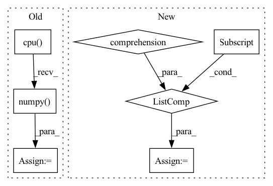

Pattern ID :17739
Before Change
mask_labels = batch["mask_labels"].to(args.device) // (batch, label_num)
predictions = convert_logits_to_ids(logits, batch["mask_positions"].to(args.device)) // (batch, label_num)
mask_labels = mask_labels.detach().cpu().numpy().tolist()
predictions = predictions.detach().cpu() .numpy() .tolist()
metric.add_batch(pred_batch=predictions, gold_batch=mask_labels)
eval_metric = metric.compute()
model.train()After Change
mask_labels = ["".join(tokenizer.convert_ids_to_tokens(t)) for t in mask_labels] // id转文字
predictions = convert_logits_to_ids(logits, batch["mask_positions"]).cpu().numpy().tolist() // (batch, label_num)
predictions = verbalizer.batch_find_main_label(predictions) // 找到子label属于的主label
predictions = [ele["label"] for ele in predictions]
metric.add_batch(pred_batch=predictions, gold_batch=mask_labels)
eval_metric = metric.compute()
model.train()
return eval_metric["accuracy"], eval_metric["precision"], \In pattern: SUPERPATTERN
Frequency: 3
Non-data size: 7
Instances Fragment ID: 58428562
Project Name: harderthenharder/transformers_tasks
Commit Name: bf825bb22c43795f1e3a08cf8969ddc613051e76
Time: 2022-11-30
Author: pankeyu@pankeyus-MacBook-Pro.local
File Name: prompt_tasks/p-tuning/p_tuning.py
M Class Name: AnonimousClass
N Class Name: AnonimousClass
M Method Name: evaluate_model(6)
N Method Name: evaluate_model(4)
M Parent Class:
N Parent Class:
M File Name: prompt_tasks/p-tuning/p_tuning.py
N File Name: prompt_tasks/p-tuning/p_tuning.py
M Start Line: 85
M End Line: 91
N Start Line: 74
N End Line: 98
Before Change
y /= max_label
batch_fake_images = netG(z, y)
raw_fake_images[tmp:(tmp+batch_size)] = batch_fake_images.cpu().detach().numpy()
raw_fake_counts[tmp:(tmp+batch_size)] = y.cpu() .view(-1).detach().numpy()
tmp += batch_size
//remove extra entries
raw_fake_images = raw_fake_images[0:NFAKE]After Change
raw_fake_labels = raw_fake_labels.astype(np.float)
//convert class labels to raw labels
raw_fake_labels = np.array([class2label[raw_fake_labels[i]] for i in range(NFAKE)] )
return fake_images, raw_fake_labels
Fragment ID: 58428560
Project Name: ubcdingxin/improved_ccgan
Commit Name: 8a85572c67f2b5e51be8e71eb77edbead26b2c0a
Time: 2020-03-11
Author: dingx92@gmail.com
File Name: CellCounting/Train_cDCGAN.py
M Class Name: AnonimousClass
N Class Name: AnonimousClass
M Method Name: SampcDCGAN(7)
N Method Name: SampcDCGAN(7)
M Parent Class:
N Parent Class:
M File Name: CellCounting/Train_cDCGAN.py
N File Name: CellCounting/Train_cDCGAN.py
M Start Line: 134
M End Line: 159
N Start Line: 136
N End Line: 165
Before Change
Converts indices to string labels, and adds a `"label"` key to the result.
predictions = output_dict["probs"].cpu().data.numpy()
argmax_indices = numpy.argmax(predictions, axis=-1)
labels = [self.vocab.get_token_from_index(x, namespace="labels") for x in argmax_indices]
output_dict["label"] = labels
return output_dictAfter Change
predictions = output_dict["label_probs"]
if predictions.dim() == 2:
predictions_list = [predictions[i] for i in range(predictions.shape[0])]
else:
predictions_list = [predictions]
classes = []
for prediction in predictions_list: Fragment ID: 58428564
Project Name: allenai/allennlp-models
Commit Name: 4b1392424079e79a39dec47c72aefed412bec3fd
Time: 2021-04-01
Author: nelson-liu@users.noreply.github.com
File Name: allennlp_models/pair_classification/models/bimpm.py
M Class Name: BiMpm
N Class Name: BiMpm
M Method Name: make_output_human_readable(2)
N Method Name: make_output_human_readable(2)
M Parent Class: Model
N Parent Class: Model
M File Name: allennlp_models/pair_classification/models/bimpm.py
N File Name: allennlp_models/pair_classification/models/bimpm.py
M Start Line: 236
M End Line: 239
N Start Line: 242
N End Line: 254